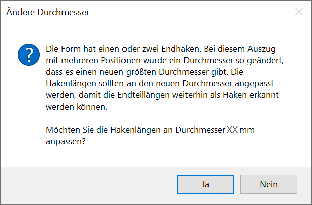
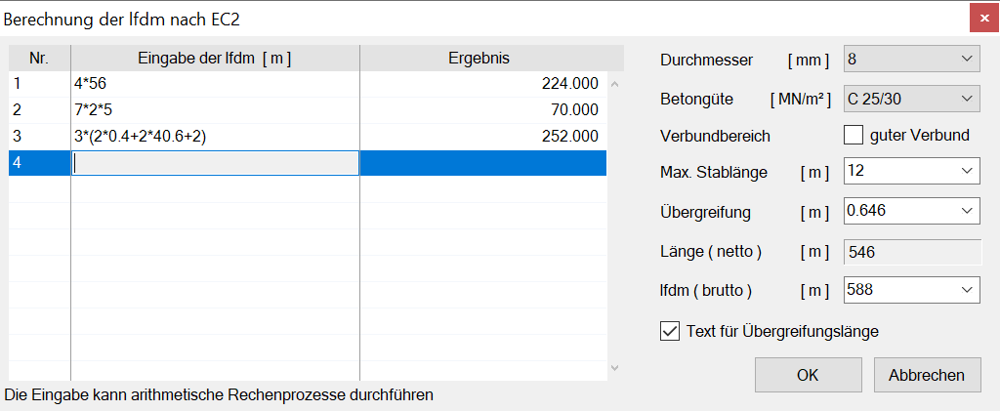
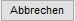

")
Biegeform-Durchmesser am Auszug und an allen verknüpften Verlegungen ändern.
·Einzelne Durchmesser können mit den Funktionen Formst | VeStaf, VeForm, VeDuSn oder VeVout geändert werden.
·Wenn Sie den Dialog Berechnung der lfdm nach EC2 durch Abbrechen verlassen haben und weitere lfdm verändern möchten, müssen Sie erneut [änd. Ø] aufrufen, um den Dialog wieder anzuzeigen.
·Um Änderungen an der Bewehrung vorzunehmen, benutzen Sie die Funktionen "Position löschen" [lö Pos], "Form löschen" [lö Form] und "Durchmesser ändern" [änd. Ø]. Damit stellen Sie sicher, dass die notwendigen Korrekturen auch an den Verlegungen durchgeführt werden.
·Wenn der Stabdurchmesser einer Biegeform geändert wird, können die Hakenlängen an den neuen Durchmesser angepasst werden.
Siehe: Hakenlängen an den Stabdurchmesser anpassen
 |
So wird's gemacht:
§Klicken Sie den Positionstext an. [Welche Position?].
Wenn der Auszug als "lfdm" vorliegt, wird der Dialog Berechnung der lfdm nach EC2 geöffnet; ansonsten wird der vorhandene Durchmesser unter Alter ø angezeigt;
§Geben Sie unter Neuer ø den gewünschten Durchmesser ein.
Der neue Durchmesser wird am Auszug angegeben und für alle verknüpften Verlegungen verwendet. Sie können sofort einen weiteren Durchmesser ändern.
Wenn der Auszug als lfdm vorliegt
Der Dialog Berechnung der lfdm nach EC2 wird geöffnet (Dialogbeschreibung siehe weiter unten).
Wenn Sie den Durchmesser von "lfdm" ändern, die ohne Angabe der Übergreifungslängen erzeugt wurden, wird die Tabelle für die Durchmesser geöffnet. Wählen Sie den neuen Durchmesser. Sie müssen ggf. die geänderte Übergreifungslänge bei der Länge berücksichtigen.
Ändern Sie "lfdm" mit Angabe der Übergreifungslängen, wird eine Nettolänge aus der ursprünglichen Länge zurückgerechnet. Hier wird bei geändertem Durchmesser auch die Übergreifungslänge angepasst, wodurch sich die Gesamtlänge ändert.
§Klicken Sie auf OK, um die Änderungen zu übernehmen.
Der neue Durchmesser wird am Auszug angegeben. Sie können sofort einen weiteren Durchmesser ändern.
Optionen im Dialog "Berechnung der lfdm nach EC2"
Berechnung der Stahlmenge für eine Position in laufenden Metern. Es werden die Übergreifungslängen unter Berücksichtigung der Betongüte, des Verbundes und des Durchmessers berücksichtigt. Die erforderliche Gesamtlänge wird als Vielfaches der max. Stablänge vorgeschlagen.
 |
Tabelle
In der Spalte Eingabe der lfdm [m] können Sie Berechnungen (Grundrechenarten) durchführen wie z. B. Anzahl x Umfang, Anzahl der Ecken x Anzahl der Stäbe x Hakenzuschlag oder ähnliches.
Bestätigen Sie alle Angaben mit der Eingabetaste. Bei nicht interpretierbaren Eingaben ist das Ergebnis = 0.
Durchmesser [mm]
Wählen Sie den Durchmesser aus.
Betongüte [MN/m²]
Geben Sie die Betonfestigkeitsklasse an.
Verbundbereich
Der Haken wird für gute Verbundbedingungen gesetzt. Wenn die Verbundbedingungen mäßig sind, entfernen Sie den Haken.
max. Stablänge [m]
Es wird der Wert aus der Rundstahl.dat vorgeschlagen. Sie können aber auch einen davon abweichenden Wert eingeben.
Übergreifung [m]
Die erforderliche Übergreifungslänge (l0) wird ermittelt und angeschrieben. Sie kann durch einen manuellen Wert von Ihnen ersetzt werden.
Länge (netto) [m]
Hier wird die Summe der Einzellängen angezeigt.
lfdm (brutto) [m]
Hier wird das Endergebnis angegeben. In der Liste steht an oberster Stelle die Nettolänge. Darunter die aufgerundete Länge auf ganze Stablängen, gefolgt von jeweils einer Stablänge mehr. Der Wert kann auch direkt eingegeben werden.
Text für Übergreifungslänge
Wenn die Länge der Übergreifung mit dem Auszugstext geschrieben werden soll, setzen Sie hier einen Haken in die Checkbox.
Die ermittelten Werte werden in die Eingabezeile übernommen. Sie können den Auszug sofort absetzen und ausrichten [Lage].

Die ermittelten Werte werden verworfen. Sie können die laufenden Meter in der Eingabezeile eingeben [Lfdm].
Siehe auch: